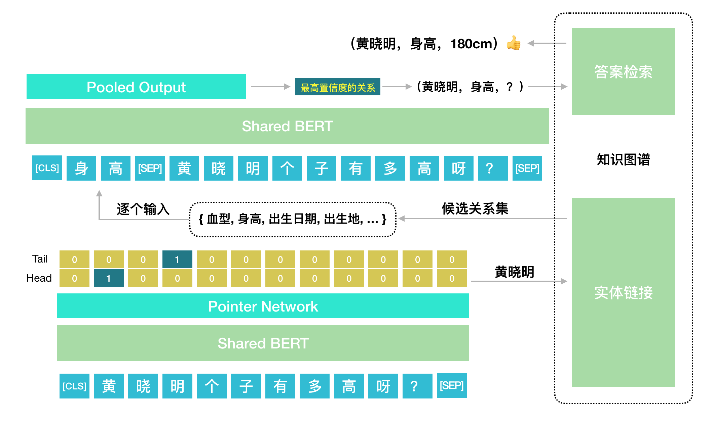
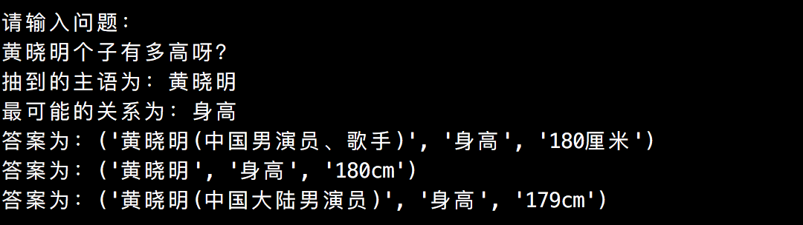

从近些年的比赛和会议中，我们不难看出“知识图谱”这个概念越来越重要了。一直以来，笔者其实都有围绕知识图谱做一些相关的工作，包括三元组的问题生成、信息抽取等等。但是图谱领域最重要的KBQA（Knowledge Base Question Answering），笔者一直都没有动手做过，最近刚好有这么一个契机需要做百科的图谱问答。Github上面看了看，又没找到特别合适的端到端KBQA的开源代码，于是笔者手撸了一个Baseline。开源出来，供大家参考。
本文理论并不多，不想看我扯经的读者，可以直接去看源码：
https://github.com/fyubang/Joint-BERT-KBQA
Task
任务的具体描述请看这里：https://zhuanlan.zhihu.com/p/53796189
基本上问题都是单跳的，也就是说只涉及一个三元组，举个例子：
1 | Q: 黄晓明有多高? |
基本思路：先用NER找到主语“黄晓明”，再用关系抽取找到关系“身高”。
Definition
- 三元组：包含主谓宾，格式形如
(subject, predicate, object)的数据； - 问题：也称query，该项目中的问题一般都是询问object；
- 知识图谱：包含大量三元组的知识库，在该项目中为百科知识。
Introduction
本项目实现了一个基于BERT的端到端的KBQA系统，支持单跳问题的查询。主要分为两个部分：
- 实体识别(NER)：输入一个问句，找出该问句的唯一核心实体(subject)；
- 关系抽取(RE)：输入一个问句和一个关系，判断该问句是否询问了该关系(predicate)。
从下面这张图可以大概理解该项目的实现思路：

训练过程：
本项目用了MT-DNN的联合训练的思想，实体识别和关系抽取共用了一个BERT作为表达层。
- 其中由于问题中确定只存在一个主语实体，NER部分就是一个简单的BERT+Pointer-Network的结构；
- 关系抽取的部分，在训练时涉及到负采样。方案如下：先根据gold triple中的主语，到图谱中找到该主语对应的所有关系(predicate)，剔除掉正确的关系后，剩下的关系作为负样本。正样本监督信号为1，负样本为0。
推理过程：
- NER过程就很简单不赘述；
- RE时，先用NER找到的主语，去图谱中找到其对应的所有关系，再逐个和问题配对，放到re模型中，选取置信度最高的关系，到图谱中寻找最后的问题答案(object)。
Data
Knowledge Graph:
NLPCC 2017图谱(提取码：khrv)
QAs:
NLPCC 2016KBQA
Environment
1 | Python3.6 |
Usage
- 用
nega_sampling.py完成对训练数据的负采样； - 用
graph.py处理图谱数据，序列化为字典； - 在
config.py中配置超参； - 写
run.sh，选择训练、验证还是测试模式。
训练：1
2
3
4
5
6
7
8export CUDA_VISIBLE_DEVICES=1
python main.py \
--do_train_and_eval \
--model_dir experiments/debug \
--nega_num 8 \
--learning_rate 5e-5 \
--batch_size 32 \
--epoch_num 3
预测：1
2
3
4export CUDA_VISIBLE_DEVICES=1
python main.py \
--do_predict \
--model_dir experiments/debug \
Result
| BERT-KBQA | Accuracy |
|---|---|
| 主语 | 97.27 |
| 关系 | 90.07 |
| 答案 | 91.31 |
Example
一个测试模式时的例子：
